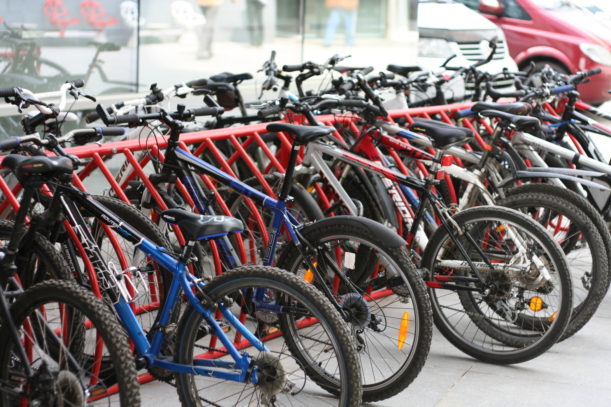
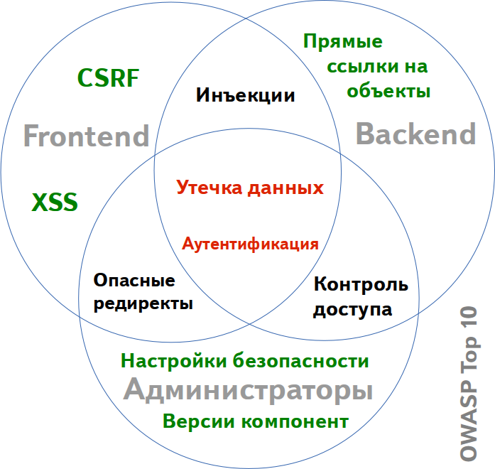

-
Как опыт CTF помогает мне НЕ заниматься безопасностью в Яндексе
Андрей Григорьев
Python разработчик
RuCTF 2013, Екатеринбург, 20 апреля
-
Что такое Capture the Flag для меня?
-
CTF — это опыт
- Фан от участия в соревновании
- Общение с другими участниками
- Решение хакерских задач
- Знакомство с технологиями
-
Что главное при написании безопасных приложений?
-

-
Специфика разработки в Яндексе
- Высокие нагрузки
- Требования к отказоустойчивости
- Множество уникальных технологий
В том числе, с открытым исходным кодом:
- Elliptics, Cocaine, Phantom/Yandex-Tank, BEM-Tools
-
Откуда берутся уязвимости на CTF?
-
Уязвимости на CTF
- Обработка пользовательских параметров
- Логические ошибки, ошибки в реализациях протоколов
- Слабые пароли и ключи в системе и сервисах
-
Элементарные правила безопасности
- Используйте стандартные средства
- Не используйте малознакомые вам библиотеки
- Читайте документацию
- Не пишите собственноручно то, с чем мало знакомы
-
Командная работа
-
Разделение ролей в CTF
Администратор - администрирует
Специалист по веб - ковыряет веб-сервисы
Реверсер - реверсит
Скриптер - пишет скрипты
Автоматизированные тулзы - ищут уязвимости :-)
-
Разделение ролей в Яндексе
Администраторы - следят за серверами и работоспособностью сервисов
Backend разработчики - ядро системы, управление данными
Frontend разработчики - клиентская логика, разработка интерфейсов, верстка
Служба информационной безопасности - ищет уязвимости :-)
-
Как это помогает в плане безопасности приложений?
-

-
Как избегать ошибок связанных с безопасностью?
-
Статический анализ
- Встроенные в IDE средства
- Опции компиляторов, code-style специфичный для языка
- Специализированные утилиты для поиска уязвимостей
-
Code-review
- Две головы лучше чем одна
- Необходимо уметь разбираться в чужом коде
- Автобусное число
-
Тестирование
- Unit-тесты
- Функциональное тестирование
- Тестирование безопасности
- Отладка в production
-
Заключение
-
Важно помнить
- Не бывает на 100% безопасного кода
- Не нашли уязвимости - значит плохо искали
- Умение писать безопасный код приходит с опытом
-
Играйте в CTF и приходите в Яндекс!
-
Андрей Григорьев
Python разработчик
119021, Россия, Москва
ул. Льва Толстого, 16
+7 (495) 739-70-00
+7 (495) 739-70-70 — факс
ei-grad@yandex-team.ru